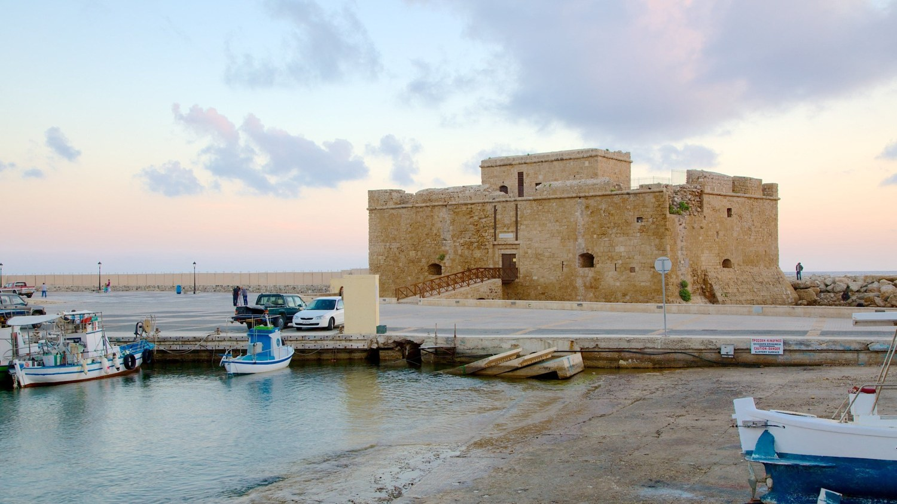

کشور: مراکش
شهر مراکش
روز ۲۰٫۱° · شب ۷٫۳°آفتاب بیشتر همراه شب سرد؛ پرواز قابل تأیید برای ترکیب قبلی نداریم.
آفتاب 1981–2010، به نقل از منبع ثانویه؛ دما 1991–2020۷٫۳ساعت آفتاب در روزپرواز نامشخصمنبع آفتاب ↗
پیشنهاد من با اولویت تازه تو: مالاگا در اسپانیا. پرواز مستقیم حدود ۳ ساعت در هر مسیر؛ نزدیکتر از قناری، اما در دسامبر خنکتر. کالاباهیا حدود ۷۳۰ یورو برای دو نفر با کیف کوچک، پنج شب و صبحانه؛ جمع برآوردی قبلی است و نرخ نهایی باید دوباره بررسی شود. عکسها و معایب هتل ←
اگر کمی مسیر بیشتر برای آفتاب بهتر میارزد: پافوس در کشور قبرس. گاردنز حدود ۷۶۵ یورو با کیف کوچک؛ رفت ۳ ساعت و ۵۵ دقیقه و برگشت ۴ ساعت و ۱۵ دقیقه. جزئیات گاردنز ←
اگر هوای گرمتر اولویت اول است: تنریف، جزایر قناریِ اسپانیا. حدود ۴ ساعت و ۴۰ دقیقه در هر مسیر؛ مارته حدود ۷۷۰ یورو با کیف کوچک. هتل در شمال جزیره است و گزارش سروصدا دارد؛ برای آرامش انتخاب اول من نیست. جزئیات مارته ←
کشور دیگری با مسیر کوتاهتر: مالت. مستقیم از دوسلدورف حدود ۲ ساعت و ۴۵ تا ۵۰ دقیقه؛ برای شهرگردی زمستانی قابل بررسی است. هنوز هتل و صبحانه و کل هزینه دو نفر زیر ۸۰۰ یورو برای تاریخ مجاز تایید نشده. منبع مسیر ←
شهر تازه در اسپانیا: آلیکانته. رایانایر مسیر مستقیم از ویزه با مدت برنامهریزیشده حدود ۲ ساعت و ۳۵ دقیقه دارد. این یک گزینه برای جستوجوی بعدی است؛ هنوز پکیج کامل مطابق بودجه پیدا نشده. منبع شرکت هواپیمایی ←
فرق زمانها: عدد جدول هواپیمایی، فاصله خروج تا ورود برنامهریزیشده است و حرکت روی زمین را هم دارد؛ زمان دقیق در هوا نیست. برای پرواز اتصالی، کل مسیر شامل توقف است و نباید آن را زمان نشستن در هواپیما حساب کرد. ترکیه و باتومی با اتصال طولانی این گزارش برای اولویت تازه تو پایینترند.
قیمتهای بالا برای دو نفر، با غذای اقتصادی و رفتوآمد برآوردیاند؛ بار اضافه میتواند جمع را بیشتر کند. این تغییر ترتیب و توضیح گزارش است، نه قیمتگیری مجدد همه سفرها. همه هتلها و عکسها ← · مقایسه سه پیشنهاد قبلی ←

مقصدها از آفتابیتر تا کمآفتابتر،
همراه انگلستان و پیشنهاد نهایی برای دو نفر.
بررسی موجودی قبلی کالاباهیا و پکیج سته مربوط به ۴ نوامبر بود. نرخ عمومی تازه جای نرخ قبلی پرواز مالاگا و پافوس را گرفته است؛ موجودی تأمینکننده در این دور بررسی نشد. بقیه نرخها با تاریخ هر کارت مشخصاند. دو گزینه مراکش پرواز قابل تأیید ندارند. هیچ رزرو یا پرداختی انجام نشده است.
ساعت آفتاب ثبتشده در ماه تقسیم بر ۳۱ روز. دادهها متعلق به ایستگاهها و دورههای متفاوتاند؛ این مقایسه تقریبی است و اختلافهای کوچک مثل مالاگا و فارو معنی قطعی ندارند. ساعت روشنایی روز یا دما معیار رتبه نیست.
رتبهبندی همه مقصدها را نشان میدهد؛ قرار گرفتن در بالای آن به معنی داشتن سفر قابل رزرو زیر ۸۰۰ یورو نیست. برای مالدیو و مراکش جمع مطابق و قابل تأیید نداریم. تفاوت نزدیک آنتالیا و شمال تنریف هم با دورههای متفاوت آمار، برتری قطعی نیست.
آفتاب بیشتر همراه شب سرد؛ پرواز قابل تأیید برای ترکیب قبلی نداریم.
آفتاب 1981–2010، به نقل از منبع ثانویه؛ دما 1991–2020گرمترین گزینه این مقایسه؛ رگبار دسامبر ممکن است. گزینه مطابق کل بودجه پیدا نشد.
1991–2020بهترین ساعت آفتاب در ترکیبهای فعلی نزدیک بودجه؛ پرواز رفت ظهر و برگشت عصر.
1991–2020روز ملایم و شب خنک. ساعت پرواز مناسب؛ آفتاب تقریباً همسطح فارو.
1981–2010مقایسه ساعت آفتاب با داده قدیمیتر انجام شده. کولینا ساحلی نیست و پرواز برگشت بسیار زود است.
آفتاب 1971–1995؛ دما 1991–2020مرجع آنتالیا برای سیده و آلانیاست؛ دسامبر بارانی است. این عدد اندازهگیری در هر هتل نیست.
1930–2025ایستگاه محلی پورتو دلا کروز C459Z؛ دوره آفتاب فقط ده سال است. این رتبه درباره شمال جزیره است؛ به جنوب تنریف تعمیم نمیدهیم.
آفتاب 2004–2013؛ دما 1996–ژوئن 2016خنک و بارانی؛ ترکیب بررسیشده توقف بسیار طولانی دارد.
آفتاب از منابع ایستگاهی قدیمی، به نقل از منبع ثانویه؛ دما 2011–2025برای شهرگردی، موزه و فضای کریسمس؛ برای گرما و آفتاب زمستانی پایین فهرست است. این آمار لندن است، نه کل انگلستان.
1991–2020برای ۱۶ تا ۲۱ نوامبر، پنج شب، پرواز مستقیم دوسلدورف–هیترو برای دو نفر ۵۳۰ یورو نمایش داده شد: رفت ۱۲:۴۰ تا ۱۳:۰۵ و برگشت ۱۵:۴۰ تا ۱۸:۰۵، با یورووینگز. مدت پرواز مستقیم لندن در هر مسیر ۱ ساعت و ۲۵ دقیقه، با احتساب اختلاف ساعت است. پیشنهاد ارزانتر ۵۰۶ یورویی برگشت ۰۸:۰۵ صبح داشت.
این قیمت عادی است و تخفیف عضویت Prime داخل حساب نیست. بار و نرخ نهایی تأمینکننده تأیید نشده. برای این ترکیب، هتل خصوصی تمیز و آرام با صبحانه همراه کل هزینهها زیر ۸۰۰ یورو تأیید نشد؛ قیمت پرواز را جمع سفر نمینامیم.
در تاریخ نمونه نوامبر، لندن معمولاً روز ۱۱٫۵ و شب ۵٫۳ درجه و حدود ۲٫۴ ساعت آفتاب روزانه دارد. برای مقایسه یکسان رتبهبندی بالا، آمار دسامبر لندن استفاده شده: روز ۸٫۸، شب ۳٫۱ درجه و حدود ۱٫۸ ساعت آفتاب.
برای موزه، کافه و فضای پیش از کریسمس قابل بررسی است؛ برای هدف آفتاب و گرمای شما انتخاب آخرم است. هزینه مجوز ETA در صورت نیاز و نداشتن مجوز معتبر یا معافیت، هر نفر ۲۰ پوند است؛ برای دو نفر ۴۰ پوند. این هزینه نیز باید به سفر اضافه شود.
این دو مقصد جدا از گزینههای قبلی بررسی شدند. عددهای هوا، میانگین اقلیمی نوامبر، دسامبر و ژانویهاند؛ وضعیت روزهای سفر را تضمین نمیکنند. هیچ رزرو یا پرداختی انجام نشده است.
هوای گرم؛ گزینه تأییدشده در بودجه ۸۰۰ یورو پیدا نشد
نوامبر در انتهای فصل مرطوب است؛ دسامبر ماه گذار و ژانویه تا مارس فصل خشکتر است. گرمای حدود ۳۰ درجه با رگبار هم همراه میشود؛ روز بارانی به معنی باران بیوقفه تمام روز نیست.
در سقف ۷۰۰ تا ۸۰۰ یورو برای دو نفر گزینه مطابق پیدا نشد. رقم ماهانه تبلیغشده لوفتهانزا برای دسامبر ۶۹۱ یورو برای یک نفر، یعنی ۱۳۸۲ یورو فقط پرواز دو نفر بود؛ این یک پیشنهاد مطابق تاریخ و مبدا شما نیست.
صفحه زنده لوفتهانزا در بخش دسامبر از ۶۹۱ یورو برای یک نفر رفتوبرگشت و سفر ۱۴روزه نشان داد؛ بعضی پیشنهادهای این صفحه از ایستگاه قطار دوسلدورف شروع میشوند. این مبلغ نرخ پرواز پنجشبه از فرودگاه دوسلدورف نیست و در جمع سفر حساب نشده است.
بازه ۶ تا ۱۲ دسامبر برای دو نفر جستوجو شد؛ صفحه شرکت به بررسی امنیتی رسید و نرخ نهایی تأیید نشد. رقم ۶۴۵ یورویی نسخه جستوجوی وب با صفحه زنده متفاوت بود و در این گزارش مبنای قیمت نیست.
برای گرما و شنا از باتومی مناسبتر است، اما با نرخهای مشاهدهشده گزینهای مطابق کل بودجه ۷۰۰ تا ۸۰۰ یورو برای دو نفر نداریم. برایش پکیج یا هتل قابل رزرو با این سقف معرفی نمیشود.
هولهوله، فرودگاه ماله؛ مرجع اقلیم، نه هر جزیره · آمار 1991–2020؛ پیشبینی روزانه نیست.سفر شهری خنک و بارانی؛ ارزش ضعیفتر برای تعطیلات آفتابی شما
روزهای آفتابی ممکناند، اما این بازه فصل مطمئن گرما و شنا نیست. اداره گردشگری آجارا هم رطوبت و بارش زیاد باتومی را ذکر میکند. عددهای ماهانه پیشبینی روز سفر نیستند.
پرواز از دوسلدورف ۳ دسامبر؛ رسیدن به باتومی ۴ دسامبر. هتل ۴ تا ۹ دسامبر، پنج شب؛ رسیدن به آلمان ۱۰ دسامبر. چهار روز کامل ۵ تا ۸ دسامبر در مقصد دارید.
اتاق دونفره همراه صبحانه برای هر دو نفر، پنج شب: ۱۳۹ یورو با مالیات. امتیاز کلی ۹ از ۱۰ با ۸۶۰ نظر؛ حدود ۳۵۰ متر تا مرکز و ۷۰۰ متر تا ساحل.
نرخ در نتیجه جستوجوی زنده بوکینگ دیده شد؛ اتاق آرام و نظافت همان اتاق جداگانه تأیید نشدهاند. قیمتهای ۹۰ تا ۹۳ یوروییِ ارزانتر عمدتاً آپارتمانهایی با نظر بسیار کم یا نظر خارجی بودند و مبنای انتخاب هتل نیستند.
موقعیت عالی در شهر قدیمی و برخورد بسیار خوب میزبان در بوکینگ.
نظافت حدود ۸٫۸ و امتیاز کلی حدود ۸٫۹ در نتیجه جستوجوی فعلی.
گزارش صدای مهمانها، در ورودی و حیاط مشترک وجود دارد؛ سکوت تضمین نیست.
سفر پیشنهادی قبلی حدود ۹۰۵ یورو و با توقف طولانی است؛ هوای این بازه خنک و بارانیتر است.
آرامش: برای خواب حساس نیاز به بررسی اتاق
غذا: چند مهمان از صبحانه و انعطاف میزبان راضی بودهاند؛ ساعت سرو را با برنامه پرواز هماهنگ کن.
نظر من برای تو: برای گشت شهر خوب؛ با هدف آفتاب و سقف ۸۰۰ یورو مناسب نیست.
کل مسیر رفت باتومی ۲۰ ساعت و ۲۰ دقیقه و برگشت ۲۰ ساعت و ۵۵ دقیقه است؛ بهترتیب شامل ۱۵ ساعت و ۱۵ دقیقه و ۱۵ ساعت و ۲۵ دقیقه توقف. پرواز دو نفر ۵۴۴ یورو نمایش داده شد: رفت ساعت ۱۵:۴۰ با رسیدن ۱۵:۰۰ روز بعد؛ برگشت ساعت ۱۶:۰۰ با رسیدن ۰۹:۵۵ روز بعد. هر مسیر حدود ۲۰ تا ۲۱ ساعت و توقفهای ۱۵ساعته در صبیحه گوکچن دارد. در این نرخ تعویض پرواز به عهده مسافر است و هزینه بار مشخص نبود.
گزینه ترکیش با حدود ۷ تا ۸ ساعت در هر مسیر، فقط پرواز دو نفر ۹۹۰ یورو نمایش داده شد.
جمع محاسبه ۹۰۳ یورو است؛ برای نمایش به ۹۰۵ یورو گرد شده. بار اضافه و اختلاف احتمالی نرخ تأمینکننده داخل جمع نیست. غذا و رفتوآمد برآورد بودجهاند؛ انتقال و بلیت نهایی تهیه نشده است.
چهار روز کامل ۵ تا ۸ دسامبر در مقصد دارید، ولی دو مسیر طولانی و حدود ۹۰۵ یورو بدون بار اضافه، در کنار هوای خنک و بارانی، این گزینه را برای هدف آفتاب و بودجه فعلی پایینتر از مالاگا و پافوس قرار میدهد.
دما 2011–2025؛ بارش 1981–2010، به نقل از منبع ثانویه؛ پیشبینی روزانه نیست.جمعها برای دو نفر با غذا و رفتوآمد اقتصادیاند. پرواز مالاگا و پافوس و هتلهای کالاباهیا، گاردنز و تئو در ۵ نوامبر تازه شدند؛ بقیه نرخهای هتل مربوط به ۴ نوامبرند. تغییر بار را در کارتهای اصلی میتوانی انتخاب کنی.
عکسها را باز کن و بعد سراغ جزئیات برو.
هنوز برای پیشبینی روزانه این سفرها زود است. عددها میانگینهای بلندمدت دسامبرند؛ ساعت آفتاب هم میانگین است و وضعیت هیچ روز مشخصی را تضمین نمیکند. برای هر منطقه، نام ایستگاه مرجع نوشته شده است.
آفتاب: میانگین ۷٫۳۱ ساعت در روز
روزها ملایمتر و نسبتاً خشکتر؛ بعد از غروب هوا سرد میشود. قیمت پرواز تاریخ قبلی در این بررسی تأیید نشد.
آفتاب: میانگین ۵٫۸۴ ساعت در روز
در آمار دسامبر روزها کمی گرمتر از مالاگا و آلگاروهاند، همراه شب خنک و احتمال باران.
آفتاب: میانگین ۵٫۱۶ ساعت در روز
هوای ملایم روز، شب خنک و امکان باران زمستانی. فریخیلیانا در ارتفاع و دورتر از این ایستگاه است.
آفتاب: میانگین ۵٫۱۳ ساعت در روز
روزها ملایم و شبها خنک؛ باران زمستانی محتمل است. سیلوش داخل خشکی است و شبش میتواند خنکتر از ساحل باشد.
آفتاب: میانگین ۴٫۸ ساعت در روز
دسامبر از ماههای بارانی منطقه است. برای آلانیا و سیده این اعداد فقط مرجع منطقهاند؛ تضمین آفتاب یا گرمای ساحلی نیستند.
آفتاب: میانگین ۴٫۷۳ ساعت در روز
ایستگاه محلی پورتو دلا کروز C459Z؛ دوره آفتاب فقط ده سال است. این رتبه درباره شمال جزیره است؛ به جنوب تنریف تعمیم نمیدهیم.
هتل را انتخاب کن یا دکمه نقشه داخل کارت آن را بزن. نقشه با نام کامل هتل، شهر و کشور جستوجو میشود؛ لینک گوگلمپ برای دیدن مسیر و نتیجه کامل همیشه در دسترس است.
کشور: اسپانیا · هتل مارته · پورتو دلا کروز، جزیره تنریف
اگر نقشه داخل گزارش بارگذاری نشد، دکمه «بازکردن در گوگلمپ» همان هتل را باز میکند. سکوت اتاق و مسیر پیاده با دیدن نقشه به تنهایی تایید نمیشوند.
در سفرهای ترکیبی فقط کیف رایگان زیر صندلی داخل قیمت است؛ چمدان مشترک تحویلی ۱۰ کیلو با ذخیره ۹۰ یورو محاسبه میشود.
مزایا و معایب از معرفی هتل و نظرات مهمانها جمعبندی شدهاند. نظر فردی اثبات قطعی حادثه نیست؛ سکوت اتاق، خدمات زمستانی و شرایط دقیق کنسلی باید پیش از خرید همان نرخ تایید شوند. این بررسی کیفیت هتل است و به معنی تازهشدن قیمت تمام سفرها نیست.
Riad Full Moon
عکسها از چند نوع اتاق هتلاند؛ اتاق داخل این نرخ: اتاق دونفره.
۱۳ دسامبر تا ۱۸ دسامبر · ۵ شب ۲۰۲۶
اتاق دونفره
مدت مسیر: برنامه پرواز این ترکیب در بررسی فعلی تایید نشده است.
اتاق خصوصی با صبحانه؛ گزارش سروصدای اتاقهای رو به خیابان وجود دارد. مالیات محلی ۳۰ یورو ذخیره تخمینی است، مبلغ قطعی نیست.
داخل محدوده تاریخی و نزدیک جاذبههای قصبه؛ فضای سنتی ریاض.
گزارش برخورد خوب و صبحانه خوشایند هم وجود دارد.
گزارش اتاق کوچک و صدای موتور تا دیروقت؛ پیدا کردن ورودی همیشه آسان نیست.
یک نظر ۲۰۲۴ ادعای مشکل تعداد شب رزرو دارد؛ مستقل تایید نشده. نرخ پرواز فعلی این ترکیب مشخص نیست.
آرامش: اتاق رو به خیابان پرریسکتر
غذا: صبحانه محلی در برخی تجربهها تعریف شده؛ تعداد نظرات کم است.
نظر من برای تو: با شواهد محدود، سکوت و رزرو نیاز به بررسی بیشتر دارد؛ جمع سفر قابل تایید نیست.
Guest House Qodwa
عکسها از چند نوع اتاق هتلاند؛ اتاق داخل این نرخ: اتاق دونفره استاندارد.
۱۳ دسامبر تا ۱۸ دسامبر · ۵ شب ۲۰۲۶
اتاق دونفره استاندارد
مدت مسیر: برنامه پرواز این ترکیب در بررسی فعلی تایید نشده است.
حدود ۲۰ کیلومتر بیرون شهر؛ برای استراحت مناسبتر از رفتوآمد روزانه. ۸۰ یورو رفتوآمد فقط ذخیره برآوردی است. مالیات محلی ۳۰ یورو ذخیره تخمینی است.
باغ و محیط بیرون شهر؛ مهمانها از سکوت و آرامش محوطه تعریف کردهاند.
صبحانه و برخورد کارکنان در چند تجربه مثبت بوده است.
دور از مرکز مراکش؛ هزینه و برنامه رفتوآمد و شاتل در تاریخ سفر تایید نشده.
کیفیت اتاقها متفاوت و اینترنت در بوکینگ امتیاز پایینتری دارد؛ پرواز این ترکیب فعلا تایید نشده.
آرامش: شواهد مثبت برای آرامش محیط
غذا: چند مهمان صبحانه و غذا را پسندیدهاند؛ نظرها درباره کیفیت اتاق و نظافت یکسان نیست.
نظر من برای تو: برای ماندن در محوطه مناسبتر از شهرگردی روزانه؛ ارزان بودن اتاق به معنی سفر ارزان نیست.
Paphos Gardens Holiday Resort
عکسها از چند نوع اتاق هتلاند؛ اتاق داخل این نرخ: اتاق دونفره استاندارد.
۶ دسامبر تا ۱۱ دسامبر · ۵ شب ۲۰۲۶
اتاق دونفره استاندارد
از زمان خروج برنامهریزیشده اولین پرواز تا ورود آخرین پرواز، با احتساب توقف و اختلاف ساعت؛ مسیر خانه و هتل و زمان حضور پیش از پرواز داخل آن نیست. محاسبه بر پایه ساعتهای ثبتشده همین گزارش است.
بوکینگ کلی ۸٫۷ و نظافت ۸٫۶؛ اتاق استاندارد و صبحانه. در منابع دیگر امتیازها پایینتر و تجربهها متفاوت است. نرخ عمومی پرواز در ۵ نوامبر تازه شد؛ موجودی تأمینکننده نهایی بررسی نشده است.
دسترسی خوب به ساحل و شهر؛ بوکینگ حدود ۸٫۷ و کارکنان ۹٫۴ نشان میدهد.
فضای باغی و استخر؛ پروازهای فعلی گزارش ساعت مناسبتری دارند.
تجربه ساختمانها و اتاقها یکسان نیست؛ گزارش دکور قدیمی و سروصدای مقطعی وجود دارد.
امتیاز اکسپدیا حدود ۷٫۶ و پایینتر از بوکینگ است؛ عکس اتاق بازسازیشده تضمین نرخ استاندارد نیست.
آرامش: فضای باغی؛ آرامش وابسته به ساختمان و اتاق
غذا: نظرهای مثبت درباره صبحانه و غذا وجود دارد؛ برخی تنوع شام را محدود دانستهاند.
نظر من برای تو: هنوز گزینه متعادل؛ فقط با روشن شدن ساختمان، نوع اتاق و فاصله از سرگرمی شبانه.
Theo Sunset Bay Hotel
عکسها از چند نوع اتاق هتلاند؛ اتاق داخل این نرخ: اتاق رو به خشکی با بالکن.
۶ دسامبر تا ۱۱ دسامبر · ۵ شب ۲۰۲۶
اتاق رو به خشکی با بالکن
از زمان خروج برنامهریزیشده اولین پرواز تا ورود آخرین پرواز، با احتساب توقف و اختلاف ساعت؛ مسیر خانه و هتل و زمان حضور پیش از پرواز داخل آن نیست. محاسبه بر پایه ساعتهای ثبتشده همین گزارش است.
بوکینگ کلی ۸٫۶ و نظافت ۸٫۷؛ نرخ برای اتاق رو به خشکی با بالکن است، نه اتاق منظره دریا. سکوت همه اتاقها تضمین نشده. نرخ عمومی پرواز در ۵ نوامبر تازه شد؛ موجودی تأمینکننده نهایی بررسی نشده است.
منظره غروب و فضای استخر از نکات مثبت؛ برخورد خوب کارکنان در نظرات متعدد.
بعضی مهمانها از اتاق جادار و صبحانه متنوع راضی بودهاند.
نرخ فعلی رو به خشکی است؛ منظره دریای عکسها داخل این نرخ تضمین نیست.
گزارش نظافت و حمام نامناسب در بعضی اتاقها و رعایت نشدن بخش بزرگسالان؛ تا مرکز به اتوبوس نیاز دارد.
آرامش: نام آرام؛ گزارش موسیقی و حضور کودک هم هست
غذا: تجربهها بسیار متفاوت: از غذای متنوع تا سرد و معمولی؛ نوشیدنی و بعضی خدمات ممکن است جدا باشند.
نظر من برای تو: مشروط؛ برای آرامش و اتاق تمیز فقط به عکس استخر تکیه نکن.
Hotel Rural Almazara
عکسها از چند نوع اتاق هتلاند؛ اتاق داخل این نرخ: اتاق با بالکن یا تراس.
۱۲ دسامبر تا ۱۷ دسامبر · ۵ شب ۲۰۲۶
اتاق با بالکن یا تراس
از زمان خروج برنامهریزیشده اولین پرواز تا ورود آخرین پرواز، با احتساب توقف و اختلاف ساعت؛ مسیر خانه و هتل و زمان حضور پیش از پرواز داخل آن نیست. محاسبه بر پایه ساعتهای ثبتشده همین گزارش است.
اقامت روستایی و دورتر از فرودگاه؛ بوکینگ کلی ۸٫۵ و نظافت ۸٫۸. هزینه بر مبنای اتوبوس و پیادهروی است. سکوت اتاق جداگانه تأیید نشده. نرخ عمومی پرواز در ۵ نوامبر تازه شد؛ موجودی تأمینکننده نهایی بررسی نشده است.
بالکن یا تراس در نرخ گزارش؛ چشمانداز منطقه و حالوهوای روستایی.
دسترسی به نِرخا و فریخیلیانا برای گشت؛ رستوران داخل هتل.
کنار مسیر پرتردد و در شیب است؛ گزارش صدای جاده و اتاق وجود دارد.
مرکز و ساحل دم در نیست؛ رفتوآمد بدون ماشین و زمان آخرین اتوبوس باید بررسی شود.
آرامش: روستایی بودن به معنی بیصدا بودن نیست
غذا: نظرها درباره صبحانه متفاوت است؛ رستوران در بعضی تجربهها تحسین شده.
نظر من برای تو: برای منظره و اقامت بیرون شهر؛ برای خواب سبک فقط با تایید محل اتاق.
BLUESEA Calabahía
عکسها از چند نوع اتاق هتلاند؛ اتاق داخل این نرخ: اتاق دونفره استاندارد.
۱۲ دسامبر تا ۱۷ دسامبر · ۵ شب ۲۰۲۶
اتاق دونفره استاندارد
از زمان خروج برنامهریزیشده اولین پرواز تا ورود آخرین پرواز، با احتساب توقف و اختلاف ساعت؛ مسیر خانه و هتل و زمان حضور پیش از پرواز داخل آن نیست. محاسبه بر پایه ساعتهای ثبتشده همین گزارش است.
در بررسی عمومی ۵ نوامبر، هتل صبحانهدار ۳۲۰ یورو و پرواز دو نفر ۱۲۲٫۸۶ یورو دیده شد. موجودی نهایی این نرخ دوباره بررسی نشده. رفت ۱۲:۱۰ و برگشت ۱۸:۰۰ است. با ۹۰ یورو ذخیره بار تحویلی مشترک، کل سفر حدود ۸۲۰ یورو میشود.
فاصله کوتاه تا ساحل، فروشگاه و رستوران؛ اتاقهای نسبتاً جادار در گزارش مهمانها.
نظافت و برخورد کارکنان در بخشی از نظرات تعریف شده است.
گزارش فرسودگی اتاق و رستوران پرسروصدا؛ سکوت هتل قطعی نیست.
استخر پشتبام و بار را در دسامبر باز یا گرم فرض نکن؛ تایید فصلی لازم است.
آرامش: سکوت وابسته به اتاق و گروههای مهمان
غذا: صبحانه نظرهای مثبت دارد؛ درباره کیفیت و تنوع غذا اتفاق نظر نیست.
نظر من برای تو: برای ساحل و گشت اقتصادی، مشروط به اتاق مناسب؛ برای سکوت مطلق انتخاب قطعی نیست.
Rincon Sol
عکسها از چند نوع اتاق هتلاند؛ اتاق داخل این نرخ: اتاق دونفره استاندارد.
۱۲ دسامبر تا ۱۷ دسامبر · ۵ شب ۲۰۲۶
اتاق دونفره استاندارد
از زمان خروج برنامهریزیشده اولین پرواز تا ورود آخرین پرواز، با احتساب توقف و اختلاف ساعت؛ مسیر خانه و هتل و زمان حضور پیش از پرواز داخل آن نیست. محاسبه بر پایه ساعتهای ثبتشده همین گزارش است.
اقامت ساحلی نزدیک مالاگا؛ اتاق استاندارد نرخ دیدهشده است و منظره دریا تضمین نشده. نرخ عمومی پرواز در ۵ نوامبر تازه شد؛ موجودی تأمینکننده نهایی بررسی نشده است.
کنار ساحل و پیادهراه؛ رستوران و حملونقل عمومی در دسترس.
نظرات مثبت درباره نظافت و کارکنان هم وجود دارد.
اتاق رو به خیابان میتواند صدای ترافیک بگیرد؛ نرخ استاندارد منظره دریا را تضمین نمیکند.
گزارش عایق ضعیف، اتاقهای قدیمی و هزینه جدا برای تخت ساحلی وجود دارد.
آرامش: ریسک صدای جاده؛ جهت اتاق مهم است
غذا: صبحانه بوفه؛ تجربه مهمانها از خوب تا معمولی متفاوت است.
نظر من برای تو: موقعیت ساحلی خوب؛ برای آرامش فقط با اتاق تاییدشده مناسب.
Pierre & Vacances Hotel El Puerto
عکسها از چند نوع اتاق هتلاند؛ اتاق داخل این نرخ: اتاق دونفره استاندارد.
۱۲ دسامبر تا ۱۷ دسامبر · ۵ شب ۲۰۲۶
اتاق دونفره استاندارد
از زمان خروج برنامهریزیشده اولین پرواز تا ورود آخرین پرواز، با احتساب توقف و اختلاف ساعت؛ مسیر خانه و هتل و زمان حضور پیش از پرواز داخل آن نیست. محاسبه بر پایه ساعتهای ثبتشده همین گزارش است.
اتاق Low Cost با صبحانه؛ نزدیکی به مرکز و ساحل مزیت است، سکوت اتاق تأیید نشده. در فهرست تازه اتاق استاندارد دیده شد؛ نرخ اقتصادی قبلی تکرار نشد. نرخ عمومی پرواز در ۵ نوامبر تازه شد؛ موجودی تأمینکننده نهایی بررسی نشده است.
ساحل روبهرو و دسترسی پیاده به مرکز، رستورانها و ایستگاه قطار.
استخر و تراس پشتبام از جذابیتهای معرفی هتلاند؛ استفاده زمستانی جدا بررسی شود.
شکایتهای متعدد از صدای اتاق مجاور، آسانسور و مهمانهای شبهنگام.
گزارش اتاق و حمام کوچک و فرسودگی؛ بعضی خدمات مثل گاوصندوق ممکن است اضافه باشند.
آرامش: برای خواب حساس ضعیفتر
غذا: بوفه انتخاب دارد، ولی شلوغی و آکوستیک رستوران بارها نقد شده.
نظر من برای تو: برای موقعیت مرکزی؛ با اولویت سکوت تو توصیه پایینتری دارد.
Colina dos Mouros
عکسها از چند نوع اتاق هتلاند؛ اتاق داخل این نرخ: اتاق دونفره استاندارد.
۱۱ دسامبر تا ۱۷ دسامبر · ۶ شب ۲۰۲۶
اتاق دونفره استاندارد
از زمان خروج برنامهریزیشده اولین پرواز تا ورود آخرین پرواز، با احتساب توقف و اختلاف ساعت؛ مسیر خانه و هتل و زمان حضور پیش از پرواز داخل آن نیست. محاسبه بر پایه ساعتهای ثبتشده همین گزارش است.
ساحلی نیست؛ نظافت بوکینگ ۸٫۳. برگشت ۰۶:۱۵ صبح است و بودجه ترانسفر برگشت در محاسبه آمده؛ قیمت ترانسفر زماندار نهایی نشده.
اقامت شششبه اقتصادی و چشمانداز شهر تاریخی و قلعه از بعضی اتاقها.
در چند تجربه، نظافت و برخورد کارکنان مثبت بوده است.
گزارش دیوار نازک، ترافیک، سگها و سروصدای اتاق بالای رستوران؛ سکوت را تضمین نمیکند.
کنار ساحل نیست؛ برگشت ۰۶:۱۵ صبح و ترانسفر سحرگاهی نقطهضعف سفر است.
آرامش: محیط خلوت، ولی عایق اتاق نامطمئن
غذا: صبحانه ساده و نظرها متفاوت؛ در نظر سپتامبر ۲۰۲۶ تنوع کم و شلوغی صبحانه نقد شده.
نظر من برای تو: برای صرفهجویی و شهر تاریخی؛ برای خواب حساس امتیاز ویژه نمیگیرد.
Pinhal do Sol
عکسها از چند نوع اتاق هتلاند؛ اتاق داخل این نرخ: اتاق دونفره با بالکن یا تراس.
۱۱ دسامبر تا ۱۷ دسامبر · ۶ شب ۲۰۲۶
اتاق دونفره با بالکن یا تراس
از زمان خروج برنامهریزیشده اولین پرواز تا ورود آخرین پرواز، با احتساب توقف و اختلاف ساعت؛ مسیر خانه و هتل و زمان حضور پیش از پرواز داخل آن نیست. محاسبه بر پایه ساعتهای ثبتشده همین گزارش است.
بیرون مرکز؛ نظافت بوکینگ ۸٫۲ و گزارشهای مثبت از محیط آرام. برگشت ۰۶:۱۵ صبح نیازمند ترانسفر پیش از طلوع است. قیمت نهایی ترانسفر هنوز تأیید نشده.
فضای سبز و خارج مرکز؛ گزارشهای مثبت از آرامش محیط و نظافت.
نرخ گزارش شامل صبحانه و اتاق با بالکن یا تراس است.
برای ساحل و مرکز به رفتوآمد نیاز دارد؛ برنامه شاتل زمستانی تایید نشده.
شکایت از صدای لولهها و عایق اتاق هم وجود دارد؛ برگشت سفر بسیار زود است.
آرامش: محیط بیرون مرکز؛ سکوت اتاق مشروط
غذا: صبحانه از نظر بعضی مهمانها کامل و از نظر برخی کمتنوع است؛ شام داخل نرخ فعلی نیست.
نظر من برای تو: برای فضای خلوتتر قابل بررسی؛ تایید اتاق و هزینه انتقال لازم است.
Holiday Inn Algarve Albufeira by IHG
عکسها از چند نوع اتاق هتلاند؛ اتاق داخل این نرخ: اتاق دونفره با بالکن؛ نرخ اقتصادی.
۱۱ دسامبر تا ۱۷ دسامبر · ۶ شب ۲۰۲۶
اتاق دونفره با بالکن؛ نرخ اقتصادی
از زمان خروج برنامهریزیشده اولین پرواز تا ورود آخرین پرواز، با احتساب توقف و اختلاف ساعت؛ مسیر خانه و هتل و زمان حضور پیش از پرواز داخل آن نیست. محاسبه بر پایه ساعتهای ثبتشده همین گزارش است.
اتاق دو نفره با بالکن و صبحانه؛ بوکینگ کلی ۸٫۸ و نظافت ۹٫۱. برگشت بسیار زود و ترانسفر بودجهبندیشده، بدون تأیید نهایی قیمت ساعت انتخابی.
در داده قبلی گزارش، نظافت ۹٫۱ و امتیاز کلی ۸٫۸ ثبت شده؛ قیمت و امتیاز زنده دوباره تایید شود.
نرخ گزارش برای شش شب، صبحانه و اتاق با بالکن است.
نام این شعبه با Holiday Inn قدیمی ساحلی اشتباه نشود؛ نشانی صحیح Rua do Estadio در آلبوفیرا است.
برگشت ۰۶:۱۵ صبح، هزینه ترانسفر و مالیات محلی باید نهایی شوند؛ سکوت اتاق تضمین نیست.
آرامش: سکوت اتاق مشخص تایید نشده
غذا: بوکینگ صبحانه را بسیار خوب معرفی میکند؛ بررسی جزئی نظرات تازه این شعبه کامل نشده.
نظر من برای تو: گزینه قابل بررسی برای نظافت؛ پیش از انتخاب، نظرات و اتاق همین شعبه تایید شود.
Sette Serenity Hotel
عکسها از چند نوع اتاق هتلاند؛ اتاق داخل این نرخ: اتاق دونفره با دید جانبی دریا.
۳ دسامبر تا ۸ دسامبر · ۵ شب · رسیدن ۹ دسامبر ۲۰۲۶
اتاق دونفره با دید جانبی دریا
از زمان خروج برنامهریزیشده اولین پرواز تا ورود آخرین پرواز، با احتساب توقف و اختلاف ساعت؛ مسیر خانه و هتل و زمان حضور پیش از پرواز داخل آن نیست. محاسبه بر پایه ساعتهای ثبتشده همین گزارش است.
رفت ۰۷:۳۰ روز ۳ دسامبر و برگشت ۲۳:۲۵ روز ۸ دسامبر با توقف است؛ رسیدن به دوسلدورف صبح ۹ دسامبر. برای برگشت انتخابشده توقف ۷ ساعته در صبیحه وجود دارد. ۴۰ یورو برای غذای مسیر و متفرقه ذخیره شده است. موجودی پکیج ۷۰۶ یورویی و بار ۲۰ کیلو هر نفر در بررسی تازه تأیید شد.
موقعیت نزدیک ساحل، مغازه و رستوران؛ فضای مخصوص بزرگسالان طبق معرفی قبلی.
غذا و ترانسفر داخل پکیج؛ بار ۲۰ کیلو هر نفر در بررسی قبلی تایید شده است.
استخر کوچک، کیفیت متغیر نظافت و مزاحمت فروش خدمات اسپا در بعضی تجربهها.
گزارش صدای بخش پشتی و مزاحمت مهمان دیگر وجود دارد؛ مسیر فرودگاه تا آلانیا و توقف برگشت طولانی است.
آرامش: بزرگسالان؛ تضمین بیسروصدا بودن نیست
غذا: نقد محدود بودن صبحانه و تنوع غذا تکرار شده؛ بعضی مهمانها غذا و نوشیدنی را خوب دانستهاند.
نظر من برای تو: بزرگسالان بودن مزیت است، ولی برای غذا و سکوت انتخاب بیریسکی نیست.
Castival Hotel
عکسها از چند نوع اتاق هتلاند؛ اتاق داخل این نرخ: اتاق دونفره رو به خشکی.
۳ دسامبر تا ۸ دسامبر · ۵ شب · رسیدن ۹ دسامبر ۲۰۲۶
اتاق دونفره رو به خشکی
از زمان خروج برنامهریزیشده اولین پرواز تا ورود آخرین پرواز، با احتساب توقف و اختلاف ساعت؛ مسیر خانه و هتل و زمان حضور پیش از پرواز داخل آن نیست. محاسبه بر پایه ساعتهای ثبتشده همین گزارش است.
رفت ۰۷:۳۰ روز ۳ دسامبر و برگشت ۲۳:۲۵ روز ۸ دسامبر با توقف است؛ رسیدن به دوسلدورف صبح ۹ دسامبر. برای برگشت انتخابشده توقف ۷ ساعته در صبیحه وجود دارد. ۴۰ یورو برای غذای مسیر و متفرقه ذخیره شده است. نرخ فعلی پکیج از فهرست عمومی است؛ بار آن در این دور دوباره تأیید نشده است.
پکیج گزارش شامل غذا، پرواز و ترانسفر است؛ هزینه روزمره قابلکنترلتر میشود.
برخی مهمانها از کارکنان، کافه و فعالیتها راضی بودهاند.
در نظرات ۲۰۲۶ گزارش اوربوکینگ و انتقال یکشبه به هتل دیگر و اشکال شاتل دیده میشود؛ گزارش مهمان است، تضمین تکرار نیست.
موسیقی و سروصدا و کیفیت متغیر اتاق نقد شده؛ پرواز برگشت گزارش توقف طولانی دارد.
آرامش: ریسک سرگرمی شبانه و مهمانهای پرصدا
غذا: بعضی مهمانها غذا را خوب میدانند؛ در نظرات ۲۰۲۶ نقد تنوع و کیفیت هم هست.
نظر من برای تو: برای امکانات پکیج؛ برای استراحت بیدردسر اولویت پایینتر.
Alba Queen Hotel
عکسها از چند نوع اتاق هتلاند؛ اتاق داخل این نرخ: اتاق دونفره بهتریننرخ رو به خشکی.
۳ دسامبر تا ۸ دسامبر · ۵ شب · رسیدن ۹ دسامبر ۲۰۲۶
اتاق دونفره بهتریننرخ رو به خشکی
از زمان خروج برنامهریزیشده اولین پرواز تا ورود آخرین پرواز، با احتساب توقف و اختلاف ساعت؛ مسیر خانه و هتل و زمان حضور پیش از پرواز داخل آن نیست. محاسبه بر پایه ساعتهای ثبتشده همین گزارش است.
رفت ۰۷:۳۰ روز ۳ دسامبر و برگشت ۲۳:۲۵ روز ۸ دسامبر با توقف است؛ رسیدن به دوسلدورف صبح ۹ دسامبر. برای برگشت انتخابشده توقف ۷ ساعته در صبیحه وجود دارد. ۴۰ یورو برای غذای مسیر و متفرقه ذخیره شده است. نرخ فعلی پکیج از فهرست عمومی است؛ بار آن در این دور دوباره تأیید نشده است.
غذا و ترانسفر داخل پکیج؛ استخر و امکانات خانوادگی از جذابیتهای هتل.
برخی مهمانها از کارکنان و ارزش خرید رضایت داشتهاند.
گزارش فرسودگی، اشکالات نگهداری و کیفیت متغیر نظافت و غذا؛ خدمات زمستانی تایید نشده.
جمع پایه گزارش حدود ۸۳۰ یورو و بالای سقف است؛ پرواز برگشت توقف طولانی دارد.
آرامش: ریزورت خانوادگی؛ سکوت تضمین نیست
غذا: نظرهای متضاد درباره غذا؛ گزارش غذای سرد و بوفه کمتنوع هم وجود دارد.
نظر من برای تو: با این قیمت و اولویت آرامش تو، انتخاب برتر نیست.
Hotel Marte
عکسها از چند نوع اتاق هتلاند؛ اتاق داخل این نرخ: اتاق دونفره.
۱۲ دسامبر تا ۱۷ دسامبر · ۵ شب ۲۰۲۶
اتاق دونفره
از زمان خروج برنامهریزیشده اولین پرواز تا ورود آخرین پرواز، با احتساب توقف و اختلاف ساعت؛ مسیر خانه و هتل و زمان حضور پیش از پرواز داخل آن نیست. محاسبه بر پایه ساعتهای ثبتشده همین گزارش است.
هتل در شمال تنریف است؛ آمار محلی پورتو دلا کروز برای دما و آفتاب جایگزین مرجع قبلی سانتاکروز شد. نظافت بوکینگ ۸٫۳؛ گزارش سروصدای مرکز شهر وجود دارد. رفت ۰۶:۰۵ و برگشت ۱۰:۱۵ است.
نظافت بوکینگ ۸٫۳ و کارکنان ۹؛ دسترسی خوب به مرکز و اتوبوس.
قیمت اقتصادی و تراس و استخر پشتبام؛ امتیاز کلی بوکینگ حدود ۷٫۷ است.
صدای خیابان، اتاق کناری و آمادهسازی صبحانه گزارش شده؛ حیاط هم تضمین سکوت نیست.
اتاق استاندارد تضمین بالکن، منظره یا یخچال ندارد؛ نبود کولر در نظرات تکرار شده است.
آرامش: ریسک محسوس سروصدا
غذا: صبحانه بوفه ۷ تا ۱۰؛ کیفیت غذا در نظرات متفاوت و گاهی غذای گرم سرد گزارش شده.
نظر من برای تو: قیمت خوب، اما برای اولویت آرامش تو انتخاب اول نیست.
یک مهمان اکسپدیا در ژانویه ۲۰۲۶ ادعای سرقت پول نقد و رسیدگی نامناسب کرده است؛ گزارش فردی است و مستقلا تایید نشده.
استعلام زنده ۵ نوامبر: هتل با صبحانه برای دو نفر، ۱۲ تا ۱۷ دسامبر، گزینه LMX Flex برابر ۳۱۵ یورو؛ پرواز و ترانسفر داخل این رقم نیستند. این گزینه با نرخ پایه ۳۰۴ یورویی کارت متفاوت است. مهلت دقیق کنسلی رایگان هنوز تایید نشده؛ فرم درباره تبدیل خودکار گزینه سهروزه به رزرو قطعی هشدار میدهد. هیچ رزرو یا پرداختی انجام نشده است.
در این ترکیب فیلترها گزینهای با قیمت قابل محاسبه زیر سقف بودجه نیست. کشور، وضعیت بار یا گزینه «فقط تا ۸۰۰ یورو» را تغییر بده.
بعد از صبحانه، برای دو نفر روزانه حدود ۲۴ یورو با غذای ساده و خرید سوپرمارکت در نظر گرفته شده است. رستورانگردی مفصل و تفریح پولی داخل جمع نیست. برای خانه–دوسلدورف–ویزه و برگشت ۱۲۶ یورو ذخیره شده؛ بلیت زماندار و اتصال اتوبوس با ساعت پرواز هنوز نهایی نشدهاند. برای پکیجهای ترکیه ۴۰ یورو غذای مسیر و متفرقه حساب شده است.
عکسها واقعی و از گالریهای معرفی هتلها هستند؛ تصویر نمونه اتاق، نوع یا منظره اتاق داخل نرخ را تضمین نمیکند. عکس منطقه هم منظره اتاق نیست. باز بودن استخر، گرم بودن آب و خدمات فصلی در تاریخ سفر تأیید نشده است.
گزینه چمدان مشترک برای سفرهای ترکیبی، ۹۰ یورو ذخیره برای یک بار تحویلی ۱۰ کیلو اضافه میکند؛ چمدان بزرگ داخل کابین برای هر دو نفر نیست. بار ۲۰ کیلو هر نفر در پکیج سته سرنیتی دوباره تأیید شد؛ بار دو پکیج دیگر هنوز نیاز به بررسی دارد. نرخها پیش از خرید باید دوباره بررسی شوند.
دما و آفتابِ این گزارش آمار بلندمدت دسامبرند؛ پیشبینی روزانه سفر نیستند. ایستگاههای مرجع و دوره آمار برای هر منطقه نوشته شدهاند. در شمال تنریف، آمار محلی پورتو دلا کروز جای مرجع قبلی سانتاکروز را گرفته است؛ دوره آفتاب آن فقط ۲۰۰۴ تا ۲۰۱۳ است و با جنوب جزیره یکی نیست. برای حساسیت به صدا، یادداشت هر هتل را بخوان.
انتخاب اولم پافوس در کشور قبرس است. انتخاب دوم مالاگا در کشور اسپانیاست. انتخاب سوم آلگاروه در کشور پرتغال است؛ برای شش شب ارزانتر، با پذیرش پرواز صبح خیلی زود.
برای «چند روز آفتاب»، بهجای قول هوا از الگوی ده سال گذشته در روزهای مشابه استفاده شده است. اعداد زیر برآورد تاریخیاند؛ آسمان کاملاً صاف در تمام روز یا تعداد روزهای آفتابی سفر امسال را تضمین نمیکنند. نرخهای قیمت با تاریخ بررسی هر کارت مشخصاند؛ موجودی نهایی تأمینکننده و آرام بودن اتاق مشخص هنوز تأیید نشده است.
انتخاب اول من؛ آفتاب بیشتر و ساعت پرواز بهتر
رفت از ویزه ۱۳:۵۰؛ برگشت از پافوس ۱۹:۳۰
برای دو نفر با کیف کوچک داخل بودجه است؛ با ذخیره یک چمدان تحویلی مشترک، حدود ۸۵۵ یورو میشود. کیفیت ساختمانها متفاوت است و گزارش سروصدای مقطعی وجود دارد؛ سکوت اتاق مشخص تایید نشده است.
روزهای کامل همین بازه در سالهای ۲۰۱۶ تا ۲۰۲۵ بررسی شدند؛ میانگین ۳٫۷ روز از ۴ روز حداقل چهار ساعت آفتاب داشت. کمترین تعداد در ده بازه گذشته ۲ و بیشترین ۴ روز بود. میانگین روزهای با دستکم یک میلیمتر بارش ۱٫۲ روز بود؛ روز آفتاب و باران میتوانند همزمان شمرده شوند.
داده بازتحلیل شبکهای هواست، نه اندازهگیری داخل هتل. این شمارش با آمار ایستگاهی ساعت آفتاب در رتبهبندی، منبع و دوره یکسانی ندارد؛ آن دو را معادل نمیگیریم. هیچکدام از این عددها پیشبینی روزانه دسامبر ۲۰۲۶ نیست.
روش و منبع داده تاریخی ↗داده خام همان مختصات و سالها ↗انتخاب ساحلی؛ ارزانتر، با پرواز مستقیم ظهر
رفت از ویزه ۱۲:۱۰؛ برگشت از مالاگا ۱۸:۰۰
با کیف کوچک داخل بودجه است؛ با ذخیره یک چمدان تحویلی مشترک حدود ۸۲۰ یورو میشود. گزارش فرسودگی اتاق و سروصدای رستوران وجود دارد؛ روزها از پافوس خنکتر است و استخر را گرم فرض نکن.
روزهای کامل همین بازه در سالهای ۲۰۱۶ تا ۲۰۲۵ بررسی شدند؛ میانگین ۳٫۷ روز از ۴ روز حداقل چهار ساعت آفتاب داشت. کمترین تعداد در ده بازه گذشته ۲ و بیشترین ۴ روز بود. میانگین روزهای با دستکم یک میلیمتر بارش ۱٫۳ روز بود؛ روز آفتاب و باران میتوانند همزمان شمرده شوند.
داده بازتحلیل شبکهای هواست، نه اندازهگیری داخل هتل. این شمارش با آمار ایستگاهی ساعت آفتاب در رتبهبندی، منبع و دوره یکسانی ندارد؛ آن دو را معادل نمیگیریم. هیچکدام از این عددها پیشبینی روزانه دسامبر ۲۰۲۶ نیست.
روش و منبع داده تاریخی ↗داده خام همان مختصات و سالها ↗بیشترین مدت با پول کمتر؛ شش شب و امکان بار مشترک نزدیک سقف بودجه
رفت از ویزه ۰۶:۱۵؛ برگشت از فارو ۰۶:۱۵ صبح
هتل کنار ساحل نیست؛ عایق ضعیف اتاق و سروصدای صبحانه در بعضی نظرات گزارش شده است. برگشت ۶:۱۵ صبح نیاز به حرکت سحرگاهی دارد. با ۹۰ یورو ذخیره بار مشترک جمع حدود ۸۰۰ یورو است؛ کرایه نهایی بار و انتقال زماندار هنوز تأیید نشده.
روزهای کامل همین بازه در سالهای ۲۰۱۶ تا ۲۰۲۵ بررسی شدند؛ میانگین ۴٫۲ روز از ۵ روز حداقل چهار ساعت آفتاب داشت. کمترین تعداد در ده بازه گذشته ۳ و بیشترین ۵ روز بود. میانگین روزهای با دستکم یک میلیمتر بارش ۱٫۸ روز بود؛ روز آفتاب و باران میتوانند همزمان شمرده شوند.
داده بازتحلیل شبکهای هواست، نه اندازهگیری داخل هتل. این شمارش با آمار ایستگاهی ساعت آفتاب در رتبهبندی، منبع و دوره یکسانی ندارد؛ آن دو را معادل نمیگیریم. هیچکدام از این عددها پیشبینی روزانه دسامبر ۲۰۲۶ نیست.
روش و منبع داده تاریخی ↗داده خام همان مختصات و سالها ↗اگر بخواهم فقط یک گزینه بدهم: پافوس گاردنز، کشور قبرس، ۶ تا ۱۱ دسامبر، حدود ۷۶۵ یورو با کیف کوچک هر نفر. اگر چمدان مشترک لازم باشد و سقف ۸۰۰ یورو ثابت بماند، از این سه فقط کولینا در کشور پرتغال با ذخیره بار به مرز بودجه میرسد؛ ساعت برگشتش نامناسب است.